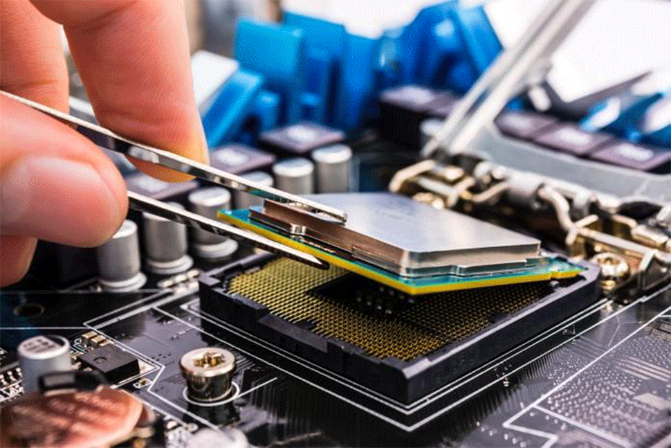
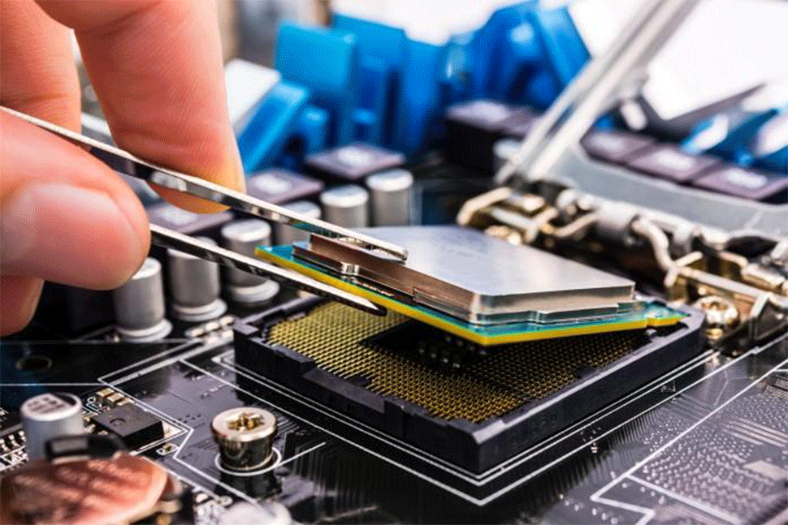

INTRODUCCIÓN Y PANORAMA
LA CARRERA DE SOPORTE INFORMÁTICO SE ENFOCA EN LA INSTALACIÓN, MANTENIMIENTO Y RESOLUCIÓN DE PROBLEMAS DE SISTEMAS Y EQUIPOS DE CÓMPUTO, TANTO EN EL ÁMBITO DEL HARDWARE COMO DEL SOFTWARE Y REDES.
LOS PROFESIONALES DE ESTE CAMPO SON LA COLUMNA VERTEBRAL DE LA EFICIENCIA EMPRESARIAL. AYUDAN A USUARIOS INDIVIDUALES Y EMPRESAS A SOLUCIONAR FALLOS TÉCNICOS, MANTENER LA INFRAESTRUCTURA DE TI FUNCIONANDO DE MANERA ÓPTIMA Y PROTEGER LA INFORMACIÓN.
EL SECTOR DE TI CRECE CONSTANTEMENTE, GARANTIZANDO UNA ALTA DEMANDA DE ESPECIALISTAS EN SOPORTE. ES UN CAMPO DINÁMICO DONDE EL APRENDIZAJE NUNCA TERMINA.
 

FUNCIONES Y RESPONSABILIDADES CLAVE:
LAS TAREAS PRINCIPALES GIRAN EN TORNO A LA GESTIÓN DIARIA DE LA TECNOLOGÍA, DESDE EL MANTENIMIENTO FÍSICO HASTA LA ATENCIÓN AL USUARIO.
- INSTALACIÓN Y CONFIGURACIÓN: INSTALAR, CONFIGURAR Y ACTUALIZAR HARDWARE, SOFTWARE Y SISTEMAS OPERATIVOS COMO WINDOWS, LINUX Y MACOS.
- MANTENIMIENTO PREVENTIVO:REALIZAR TAREAS DE MANTENIMIENTO RUTINARIO, COMO COPIAS DE SEGURIDAD Y REVISIONES DE HARDWARE, PARA PREVENIR FALLOS ANTES DE QUE OCURRAN.
- SOPORTE TÉCNICO (NIVEL 1 Y 2):ASISTIR A LOS USUARIOS, YA SEA DE FORMA REMOTA O PRESENCIAL, PARA RESOLVER PROBLEMAS TÉCNICOS Y RESPONDER PREGUNTAS.
- DIAGNÓSTICO Y REPARACIÓN:IDENTIFICAR LA CAUSA RAÍZ Y REPARAR PROBLEMAS EN EQUIPOS Y REDES INFORMÁTICAS DE MANERA EFICIENTE.
- GESTIÓN DE REDES: ANALIZAR Y MANTENER REDES LAN Y WAN PARA ASEGURAR UNA BUENA CONECTIVIDAD Y RENDIMIENTO CONSTANTE.
- SEGURIDAD INFORMÁTICA: IMPLEMENTAR MEDIDAS DE SEGURIDAD (FIREWALLS, ANTIVIRUS, COPIAS DE SEGURIDAD) PARA b PROTEGER LOS SISTEMAS CONTRA ATAQUES CIBERNÉTICOS Y FUGAS DE DATOS.
HABILIDADES ESENCIALES PARA EL ÉXITO
PARA DESTACAR EN ESTA CARRERA, EL CONOCIMIENTO TÉCNICO DEBE COMPLEMENTARSE CON HABILIDADES INTERPERSONALES:
- CONOCIMIENTOS TÉCNICOS PROFUNDOS:AMPLIO CONOCIMIENTO EN HARDWARE, SOFTWARE, REDES Y SISTEMAS OPERATIVOS.
- ESOLUCIÓN DE PROBLEMAS (TROUBLESHOOTING):CAPACIDAD ANALÍTICA PARA IDENTIFICAR LA CAUSA RAÍZ DE UN PROBLEMA TÉCNICO Y ENCONTRAR SOLUCIONES EFICACES BAJO PRESIÓN.
- COMUNICACIÓN Y PACIENCIA: HABILIDAD PARA EXPLICAR CONCEPTOS TÉCNICOS COMPLEJOS A PERSONAS NO EXPERTAS Y COMUNICARSE DE MANERA CLARA Y EFECTIVA.